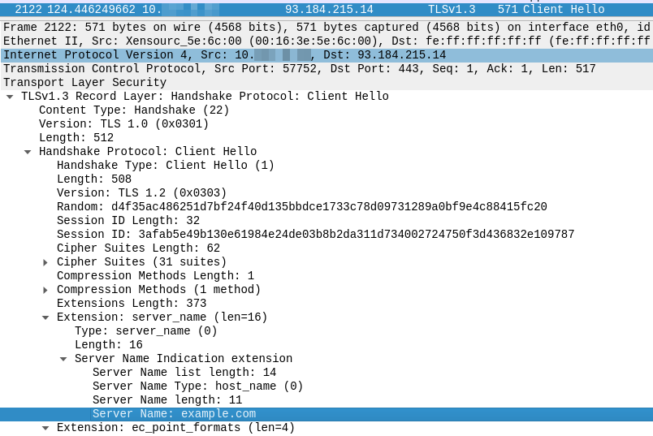
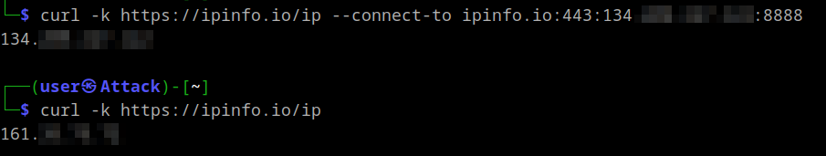
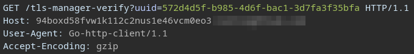
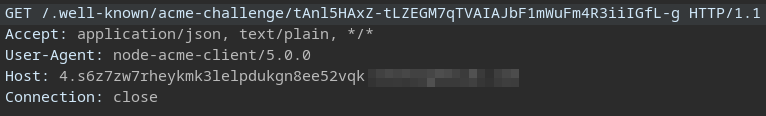

I recently stumbled upon a great writeup which explained how it is possible to get a SSRF from SNI to hit the Azure VM Instance Metadata Service(IMDS). Inspired, I started scanning for this behaviour within a bug bounty scope. Not finding a single target, I proceeded to scan for the more “generic” finding of SNI based SSRF which yielded some interesting results.
To be honest, I did not even know that SNI SSRF is a thing, so let’s start with that.
SNI SSRF
As defined in RFC 6066, Server Name Indication(SNI) is an extension to Transport Layer Security(TLS) allowing a client to indicate which hostname it is attempting to connect to at the start of the handshaking process.
After issuing an HTTPS request, we can see the SNI inside the Client Hello message:

Albeit on a lower level of the networking stack, SNI is somewhat similar to the HTTP Host header in that it instructs a server/reverse proxy about the intended destination. To play around with this, install nginx and configure the following:
1stream {
2 log_format basic '$remote_addr [$time_local] $protocol $status $bytes_sent $bytes_received $session_time';
3 access_log /var/log/nginx/access.log basic;
4
5 server {
6 listen 8888 ssl;
7 resolver 8.8.8.8;
8 proxy_pass $ssl_server_name:80;
9 ssl_preread on;
10 ssl_certificate ./ssl/MyCertificate.crt;
11 ssl_certificate_key ./ssl/MyKey.key;
12 }
13}
(To use stream on Ubuntu you have to install it first with sudo apt install libnginx-mod-stream)
Set up certificates (content does not matter):
openssl ecparam -genkey -name secp384r1 -out MyKey.key \
openssl req -new -key MyKey.key -x509 -sha256 -days 365 -nodes -out MyCertificate.crt
Test and apply config:
nginx -t
nginx -s reload
Now you are able to trigger the SSRF with the following command:
curl -k https://example.com --connect-to example.com:443:<ip of nginx host>:8888
Example: 
Finding
Using the following Nuclei template I scanned for SNI-based SSRF in the scope of several bug bounty programs.
id: sni-ssrf
info:
name: SNI Based SSRF
author: flomb
severity: medium
http:
- raw:
- |
@tls-sni: {{interactsh-url}}
GET / HTTP/1.1
Host: {{Hostname}}
Accept: */*
matchers:
- type: word
part: interactsh_protocol
words:
- "http"
After I got a few matches, I tried to replicate them to see if there were any actual vulnerabilities. The Host header is included because some reverse proxies will reject a request if SNI and HTTP Host header do not match. The dig command substitution was necessary to avoid things like CNAME records where we only want the final IP address.
1curl -k --resolve <collaborator url>:443:$(dig learning.greensoluce.com +short| tail -1) https://<collaborator url> -H "Host: learning.greensoluce.com"
The results were quite surprising:


These responses hint at automatic TLS certificate issuance, with the second one clearly using the ACME HTTP Challenge. Therefore, instead of SNI-based SSRF, I found servers that automatically requested a certificate for the requested SNI.
(The above example however was actually related to a SaaS vendor which allowed configuring a custom domain instead of instance-id.vendor.com)
A quick search led me to the caddy web server, which claims to be the first to offer this functionality. As this was entirely new to me, I wanted to try it out. All you would have to do is download caddy and start it with the following configuration.
caddy run --config caddyfile
Disclaimer: use this configuration only for testing purposes!
The ACME protocol ensures that you can not request certificates for domains you do not own, additionally, services like Let’s Encrypt are rate-limited and you might therefore not be able to request a legitimate certificate after too many false attempts. For that reason Caddy requires you to configure restrictions when using on_demand_tls. This is implemented via the ask option, which is an endpoint to which Caddy will send an HTTP request to confirm the domain before attempting to issue a certificate.
In this example we configured Caddy itself to confirm these requests, which would lead to the kind of behavior initially observed.
{
on_demand_tls {
ask http://localhost:5555/
}
}
# main listener configured with tls on demand
:443 {
tls {
on_demand
}
respond "Welcome to Caddy!"
}
# listener confirming requests for certificate generation
http://localhost:5555 {
respond 200
}